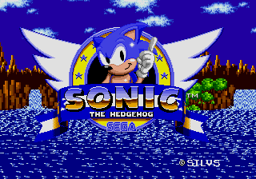
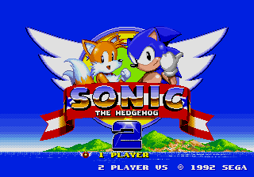

About
Vertz' Romhack Room was a Discord server I established on April 15th, 2020 originally for the sole purpose of creating download links for all my future rom hacks as an alternative to using Mediafire or Google Drive. A month later in May, I opened the server up to the public and during its run from 2020 to 2023, the server has supported and hosted 19 Rom Hacking projects with a group of 11 Rom Hackers, before its closing on January 1st, 2024.
Rom Hacks
Click on an image to download the hack (if available)
| Sonic 1 Encore Remake - Vertz1515 | Sonic's Epic Quest - Sonic The Dutch Hedgehog | Sonic 1 PN - PikaNoob |
| Added on May 25th, 2020 | Added on May 26th, 2020 | Added on May 26th, 2020 |
|  | ||
|---|---|---|
| Sonic 1 Remix - Vertz1515 | Sonic Razor - Silvertool64 | Super Mario World 0 - Pancake002 |
| Added on May 28th, 2020 | Added on June 16th, 2020 | Added on June 22nd, 2020 |
| S2 Definitive - Silvertool64 | A Nick Arcade Hack - Silvertool64 | SMW1 - Jer Doss |
| Added on July 9th, 2020 | Added on August 23rd, 2020 | Added on August 31st, 2020 |
| Protagonist 2D - Pancake001 | Fantasy World - Silvertool64 | Sonic 3 New Age - saan1ty |
| Added on October 18th, 2020 | Added on October 20th, 2020 | Added on April 6th, 2021 |
| Sonic Premix - Vertz1515 | Silcon 64 - TheInfiniteLegend | Hammer Bro - codfish1002 |
| Added on May 16th, 2021 | Added on July 25th, 2021 | Added on Feburary 2nd, 2022 |
These hacks were pulled from the server list / archived / No longer supported by the server
|  | ||
|---|---|---|
| The Real Sonic 2 - lavagaming1 | Sonic goes for a run and fails - Pancake001 | Sonic 2: The No Checkpoint Challenge - Jer Doss |
| Added on July 5th, 2020 | Added on May 27th, 2020 | Added on May 2th, 2020 |
Supported Rom Hackers
The September 2021 Contest
On September 23rd of 2021, an attempt was made to start a mini hacking contest in the server. A Google Form was made to provide 2 types of registration into the contest, you could either choose to be a judge or a hacker. Here's a list of the signup roles:
There wasn't any particular theming or rules that had to be followed, as the winner was decided based on a vote from the judges.
The contest came to a close on Christmas of 2021, and unfortunatly the results turned out inconclusive as no roms were submitted for review.
After The Shutdown
Vertz' Romhack Room, after a very long period of inactivity, was ultimately one of the servers to cease support and get archived on January 1st, 2024, with a total of 34 members. However, a portion of this server still lives on in the vertz1515.com Discord server, which served as the successor to all the previous servers that were archived. You can set yourself as a "Hacking Member' in the role disignation center.